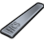
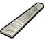
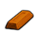
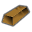

代钢级·中世纪·坩埚钢 CrucibleSteel
代钢级家具建筑651防具142穿戴件40近战工具96远程武器7其它8共944件 价值1.5 质量0.35 护甲0.90/0.90/0.08 利钝1.10/1
Vile's Metallurgy · def自带 · Things/Item/HCS

代钢级·中世纪·乌兹钢 WootzSteel
代钢级家具建筑647防具142穿戴件40近战工具96远程武器7其它8共940件 价值3 质量0.35 护甲0.92/0.80/0.08 利钝1/0.90
Vile's Metallurgy · def自带 · Things/Item/WootzSteel

代钢级·中世纪·铸铁 CastIron
代钢级家具建筑647防具142穿戴件40近战工具96远程武器7其它8共940件 价值0.8 质量0.35 护甲0.75/0.50/0.08 利钝0.70/1.10
Vile's Metallurgy · def自带 · Things/Item/CastIronIngot

代钢级·中世纪·锻焊钢 ForgedSteel
代钢级家具建筑647防具142穿戴件40近战工具96远程武器7其它8共940件 价值1.2 质量0.35 护甲0.90/0.90/0.08 利钝1/1
Vile's Metallurgy · def自带 · Things/Item/ForgedSteel

代钢级·中世纪·青铜 Bronze
代钢级家具建筑647防具142穿戴件40近战工具96远程武器7其它8共940件 价值2 质量0.40 护甲0.70/0.80/0.06 利钝0.90/1.20
Core_SK · def自带 · Things/Item/BronzeIngot

代钢级·中世纪·纯铜（Cu） CopperBar
代钢级家具建筑515防具140穿戴件37近战工具91远程武器7其它8共798件 价值3 质量0.40 护甲0.60/1/0.03 利钝0.50/0.70
Core_SK · def自带 · Things/Item/Ingot

塑料级·中世纪·纯锡（Sn） TinBar
塑料级家具建筑372防具34穿戴件19近战工具42其它2共469件 价值3 质量0.20 护甲0.70/0.60/0.06 利钝0.50/0.40
Core_SK · def自带 · Things/Item/Ingot